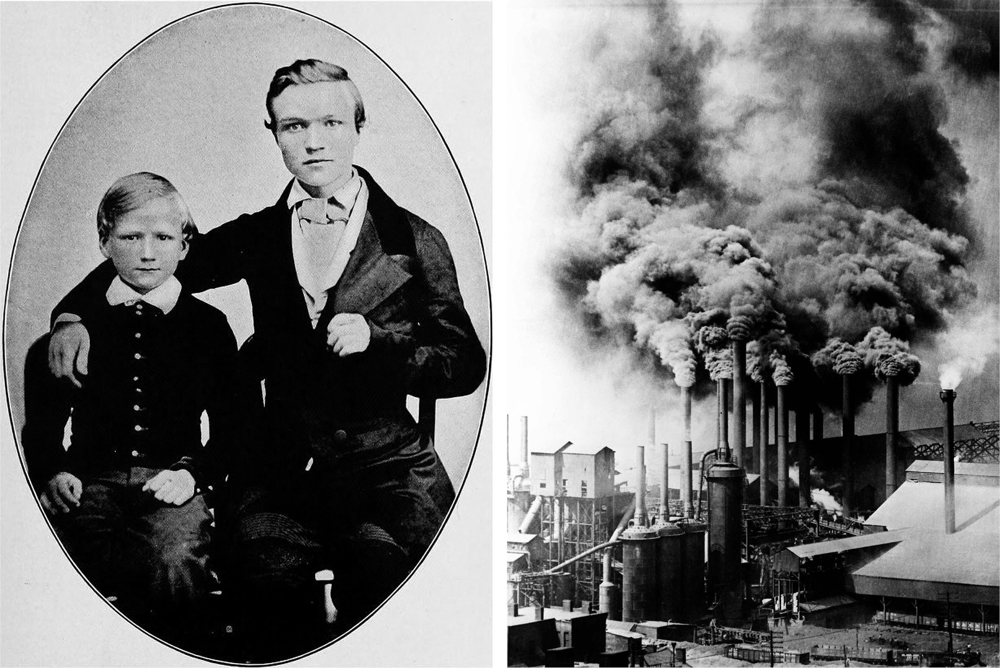
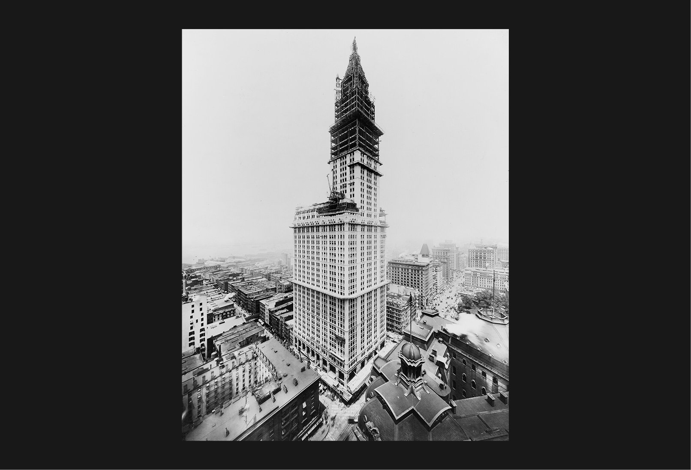
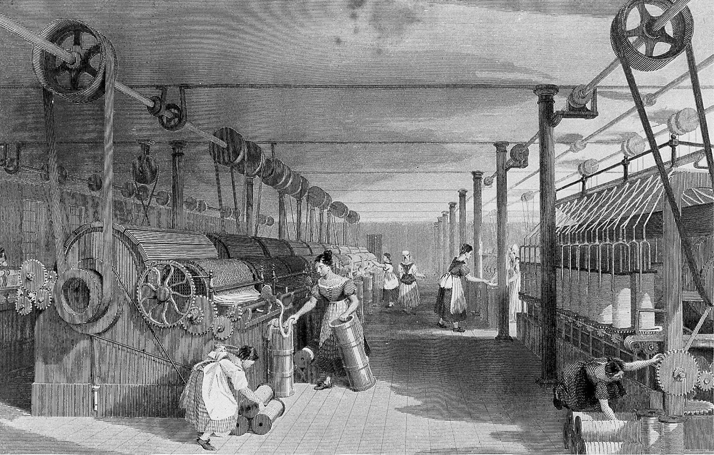
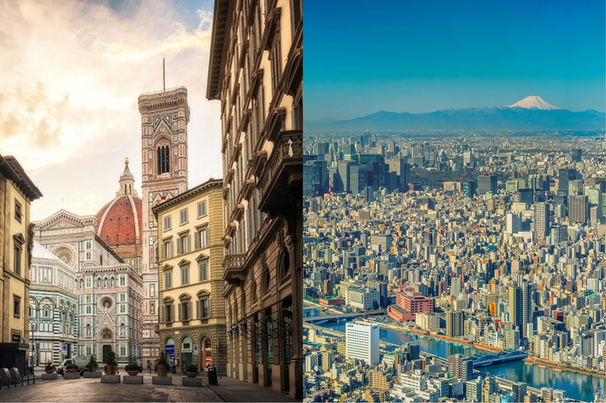

从蒸汽机到钢铁，从半导体到人工智能
每个时代都由其"奇迹材料"塑造
我们身处革命年代的现场

新技术常常伪装成过去的样子。Marshall McLuhan 称之为"后视镜理论"——我们总是通过熟悉的事物来理解新事物。
AI 不是让你骑得更快的自行车，而是一辆汽车。
知识工作分散在数十个工具中，AI 代理难以整合完整上下文
代码可以测试验证，但一般知识工作的质量难以衡量
1865年，英国《红旗法案》要求每辆汽车前方必须有人举着红旗步行引导。这个法律延缓了英国汽车工业的发展整整30年。
我们是否也在用"红旗"限制 AI 的潜力？

19世纪，建筑限制在6-7层，因为砖石结构无法承受更高的重量。钢铁的出现使摩天大楼成为可能。

早期工厂只是用蒸汽机替换水车，生产力提升有限。真正的突破来自重新设计整个工厂布局。
只是将 AI 聊天机器人嵌入现有工具，而不是重新思考工作流程。
1000名员工 + 700多个代理
城市的演变反映了技术的力量。

动力革命
结构革命
认知革命
AI 不是更好的搜索引擎
不是更快的助手
不是更聪明的工具
AI 是一种全新的材料
需要全新的架构
但真正的变革来自于让 AI 承担更多责任，让人类专注于更高层次的决策和创造。
当组织被"钢铁"加固，繁琐工作委托给永不休息的思维时，知识工作会是什么样子？
不要只是"更换水车"，而是重新思考整个工厂。
每一次技术革命
都重新定义了可能性的边界
我们身处革命年代的现场
Steam, Steel, and Infinite Minds
基于 Ivan Zhao (Notion CEO) 的文章
2025年12月22日